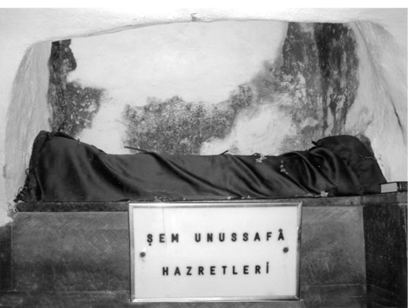
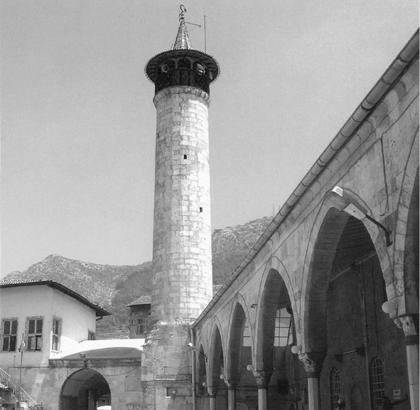
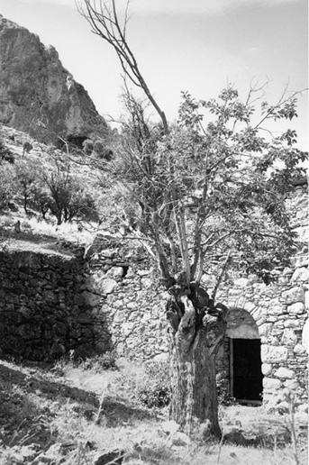
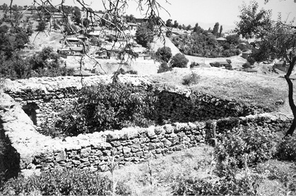
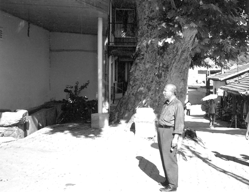
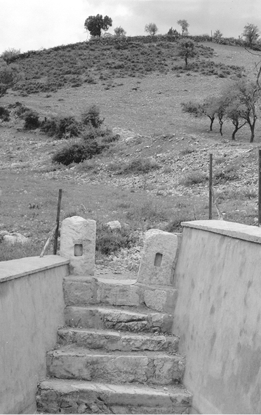

Havârîler Nur Yollarında
Yalvaç
Barla Dağı’nın karşısındadır. Yalvaç; peygamber, nebi, resul, kitap getirilmiş elçi anlamındadır. Yalvaç’ta, havârîlerin birçok eserleri bulunmaktadır.
İsa Aleyhisselâm’ın havârîleri, Kıbrıs, Antalya, Isparta, Eğirdir’den, ileride Anadolu’da tulû edecek olan Risale-i Nur menzillerine (hâssaten Nis, Bedre, İlema, Barla, Yalvaç, … gibi yerlere) gelmişlerdi.
Şem’ûn-u Safa Hazretleri
Aziz havârîlerden olan Şem’ûn-u Safâ Hazretleri’nden, Nur Üstad On Dokuzuncu Mektup olan Peygamberimiz’in mu’cizelerinin anlatıldığı risalenin bir hâşiyesinde bahsetmektedir:
“Seyyah-ı meşhur Evliya Çelebi, Hazreti Şem’ûn-u Safâ’nın türbesinde, ceylân derisinde yazılı İncil-i Şerîf’te, bu gelen âyeti okumuştur. Resûl-i Ekrem (aleyhissalâtü vesselâm) hakkında nâzil olan âyet: ايتون Bir oğlan, اٰزربيون yani İbrahim neslinden ola.. پروفتون peygamber ola.. لوغسلين yalancı olmaya.. بنت O’nun افزولات mevlidi Mekke ola.. كه كالوشير sâlihlikle gelmiş ola.. تونومنين onun mübarek adı *مواميت Ahmed, Muhammed ola.. ايسفدوس O’na uyanlar تاكرديس bu cihan ıssı7 olalar, بيست بيث dahi ol cihan, ıssı ola...
* Bu “Mevâmît” kelimesi “Memed”den ve “Memed” dahi “Muhammed”den tahrif edilmiş.” (Mektubat/19. Mektup/16. İşaret)
Barla Dağları’nda hâfızasından bu bahsi nakleden Nur Üstad’ın eşsiz hâfızasına binler barekallah!
Nice aramalardan sonra, on ciltlik Seyahatname’nin üçüncü cildinde bu nurlu havârî Şem’ûn-u Safâ Hazretleri’nin bahsini şöyle bulmuştuk:
“Hazreti Şem’ûn-u Safâ ziyaretgâhı: Hazreti Mesih (aleyhisselâm)’ın on iki halifesi vardı. Bunların birincisi Habib-i Neccâr, ikincisi de Şem’ûn-u Safâ idi. Yunanlılar buna peygamber derlerse de aslı yoktur. Hazreti İsa, çocukluğunda bunların kucağında yetişmiştir. Bu Şem’ûn, Hazreti Yahya’nın akrabalarından idi. Hazreti Mesih’in göğe çıkmasından sonra Nablus şehrini terk edip, çok zaman Antakya’da Habib-i Neccar ile oturmuş idi. Habib-i Neccar’ın şehid olmasından sonra nice zaman seyahat etmiştir. Yaşlandığında bu Nakura’da şehid olmuştur. Hristiyanlar onu burada defnedip, üzerine kayserlerden biri bir kubbe, etrafına da güzel bir bahçe yaptırmıştır. Bütün Muhammed ümmetinin ziyaret ettiği gibi, hâlen hristiyanların da ziyaretgâhıdır. Nice yüz Dürzî dervişi ve fukaraları vardır. Nurlu kubbesinin içi çeşitli balmumu ile süslüdür. Şamdan, kaliçe ve meşâleler ile donatılmış ve on iki havârî aşkına on iki kandil maşallah gece gündüz devamlı yanmaktadır. Hiç sönmemişlerdir. Bütün hizmetkârları bu işle görevlidirler. Zeytinyağı yaktıklarından her köyden yüzlerce kap zeytinyağı gelir. Sığırları dağlarda başıboş gezer. Asla kurtlar saldırmaz, hırsızlar uğramaz.
Bir de bu köy halkının evlerinin kapıları gece gündüz açıktır. Gayet düzenli Dürzîleri vardır. Bütün eşyaları her tarafta meydandadır. Hiç kimse dokunmaz. Bu da güzel bir âdettir. Hristiyanların bir müşkülü olsa, bu türbeye gelip Şem’ûn-u Safâ’nın el yazısı ile ceylân derisi üzerine yazılmış ve hâlen türbede bulunan İncil âyetlerine el sürüp yemin ederler. Eğer yalan söylerler ise ölürler. Fakat suçlular korkup türbeye yaklaşmadan önce kaçarlar. Ben, bu İncil’i yedi kere açıp seyrettim. Ma’kılî yazısına8 benzer bir yazıdır. Masraf kâtibi Rum Mehmed Ağa ile bu gerçek İncil’den Hazreti Peygamber hakkında Hazreti İsa’ya gönderilen âyeti çıkartıp buraya yazdım. Âyet-i şerif, İncil’den olup, Muhammed Mustafa (sallallahu aleyhi ve sellem) için söylediklerinin Türkçe’si şöyledir:
‘Bir çocuk, Azer oğlundan peygamber ola. Yalancı olmaya. Onun doğumu Mekke ola. Doğrulukla gelmiş ola. Onun mübarek adı Ahmed Muhammed ola. Ona uyanlar bu cihan ıssı olalar. Dahi ol cihan, ıssı ola.’

Şem’ûn-u Safa Hazretleri’nin Habib-i Neccâr camii ve
türbesindeki kabri (merkadi).
Bu Şem’ûn yazısı ile yazılan İncil’den bu âyet-i şerife çıkarılıp yazıldı. Daha nice şeyler seyredildi. Buraları ağaçlıklı bir yer olduğundan bütün İslâm askerleri gezinti için buralara gelir. Burada bütün Akdeniz, kara tarafından Balbek, Bikâ Sahrası, Rebve Boğazı, Yezid Nehri, Deyr-i Cebeli, Zeydaniye Kalesi, Şakif Kalesi, Sayda Kalesi, Beyrut ve bütün Maanoğlu Dağları görünür.”
Şem’ûn-u Safâ ismindeki bu aziz ve inanmış şahsiyetin ismi bazı yerlerde de Simun Petrus şeklinde geçmektedir. Yine kaynaklar bu aziz için şu malumatı da vermektedir:
“Şem’ûn-u Safâ, Hazreti İsa Aleyhisselâm’ın havârîlerindendir. Petros veya Sen Piyer de denilmektedir. Bu aziz havârî, Antakya Kilisesi’ni de yaptıran bir şahsiyettir. Milâdî 65’te Roma’da Neron tarafından hapsedilmiştir. Daha sonraları ise, zulmen çarmıha gerilerek şehid edilmiştir. Havârî Şem’ûn-u Safâ’nın, Hristiyan dünyasına büyük hizmetleri olmuştu.”
Gönül-Nur Dostum Abdullah Aymaz, bahsimizle alâkalı olarak 31 Temmuz 2005 tarihli Zaman Gazetesi’nde şunları yazmaktadır:
Denizi İbrikte Göstermek
Kur’ân-ı Kerîm, bazı olayları anlatırken, yer ve zaman göstermez. Böylece tarih boyunca dünyanın pek çok yerinde ayrı ayrı zamanlarda yaşanmış benzer olayların sadece orijinal bir numûnesini takdim ederek, o cüz’î misal ile hepsini bir nevi hatırlatmış ve sergilemiş olur. Meselâ Kehf Sûresi’nde, Ashâb-ı Kehf’ten bahsedilir. Ama yeri ve zamanı tayin edilmez. Çünkü dünyanın pek çok yerinde hatta Anadolu’nun üç-dört vilayetinde Ashâb -ı Kehf ile ilgili mağaralardan söz edilmektedir. Asıl kast edilen hangisidir bilmiyoruz, ama hemen hemen hepsinde de benzer durumlar yaşanmıştır. İnsanlar imanlarını koruyabilmek için mağaralara, yeraltlarına çekilmişlerdir. İlk hristiyanlar, Roma’da böyle yerlere gizlendikleri gibi, Kırşehir, Nevşehir civarında yüzlerce insan da böyle yeraltı korunaklarına sığınmışlardır. Kur’ân-ı Kerîm, Yâsîn Sûresi’nin hemen ikinci sayfasında bazı elçilerden bahsediyor: “Şimdi sen onlara bir misâl getir. Malum şehir halkına, onlara da elçiler gelmişti. Evet, iki elçi gönderdik onlara. “Yalancı!” dediler onlara. Bunun üzerine, güçlendirdik onları bir üçüncü elçi ile. Dediler hep birden “Biz Allah’ın elçileriyiz sizlere!” Ahâli dedi ki: “Doğrusu Rahman’ın indirdiği bir şey yok! Siz de bizim gibi bir beşersiniz, evet evet... Siz sadece yalancısınız!” Elçiler dediler: “Elbette biliyor Rabb’imiz, size gönderilen elçileriz biz; Açıkça tebliğden başka bir şeyle yükümlü değiliz biz.” Ahâli dedi ki: “Siz uğursuzsunuz siz, şayet vazgeçmezseniz, sizi taşlarız, acı mı acı bir azap size dokundururuz.” Elçiler cevap verdiler: “Uğursuzluğunuz sizinle beraber, çünkü siz imansızsınız, irşad edildiniz diye mi böyle söylüyorsunuz? Haddi aşan toplumun tekisiniz siz!” (Yâsîn Sûresi, 36/13-19).
Kimdir bunlar? Bazılarına göre, bunlar bir zaman diliminde gönderilmemiş. Bilakis ayrı ayrı dönemlerin elçileridir. Hatta bunlar için “Bunlar Hz. Musa, Hz. İsa ve Hz. Muhammed Aleyhimüsselam’dır.” şeklinde değerlendirme yapanlar bile vardır. Bazıları bunların üç peygamber değil, üç havârî olduğunu söylemiştir. Aslında bu ifadeler her peygamber döneminde çeşitli yerlere tebliğ için gidenleri ifade edeceği gibi daha sonraki diriliş hareketlerindeki fedakâr ve cefakâr dindarların hâllerini de anlatmaktadır. Bunlardan bir cüzi misali de Isparta / Yalvaç civarında yaşananlar olabilir. Bir kral, bir dönem kurulan 25 şehre kendi ismini hatırlatması için “Antiocheia” adını verdirmiştir. “Antakya” şehrimiz bunlardan birisi olduğu gibi Yalvaç’ta kurulan Antiocheia da bunlardandır. Bazı Kur’ân-ı Kerîm meâllerinde, Yâsîn Sûresi’nde geçen bu olay, Hatay Antakya’da geçmiş olarak izah edilmiştir. Bu kıssa Antakya’da geçmiş olabilir. Ama burasının Isparta veya Antakya’nın olması da mümkündür. Zaten Yalvaç isminin manasına bakacak olursak, kök olarak “yalvaç” yalvaran, dileyen iken, haber getirici, elçi, müjde veren ve peygamber mânâlarında da kullanılmıştır. Bu bakımdan oraya gelen elçilerin menkıbeleriyle alâkalı olabilir. Buraya tevhidi tebliğ için gelen elçi ilk gün iyi karşılanmış. İkinci gün Hz. İsa Aleyhisselam’ın peygamberliğinden bahsedince kovulmuştur. Daha sonra diğer tapınaklara gitmiştir. Burada aslında hem Hristiyanlık öncesine hem de sonrasına ait pek çok tarihî eser bulmak mümkündür.
Çok enteresan bir tevafuktur. Yalvaç’ın karşı yamacındaki Barla da, bütün dünya materyalizmine karşı Kur’ânî Tevhid’in aklı ve kalbi iknâ eden bütün ince ve derin delillerinin yazıldığı merkezdir. Evet, Barla’da dağlar büyüklüğünde taşları bulunan manevî bir kale inşâ edilmiştir. Bu inşa ve tamir, küçük bir iş değildir. Bilâkis bütün insanlığın dertlerini tedavi, kalb-i umumi ve vicdan-ı umumînin ıslahı gibi çok büyük mânevî bir hizmeti ihtiva etmektedir.
Habib-i Neccar ve Antakya
Mehmed Tekin Bey’in kitabında da Şem’ûn-u Safâ Hazretleri ile ilgili şu bilgileri okumaktayız:
Şem’ûn, Hz. İsa’nın on iki havârîsinden birisidir. Halim-selim, temkinli, bilgin bir kişidir. İbnü’l-Esir’e göre Şem’ûn, Tiberius döneminde hapse atılmış, daha sonra hapisten kurtularak Antakya’ya gidip oradaki insanları Hristiyanlığa davet etmiştir. Hattâ Evliya Çelebi hem Habib-i Neccar’ın, hem de Şem’ûn-u Safâ’nın havârî olduklarını, Hz. İsa’nın, çocukluğunda bunların kucağında yetiştiğini ve Şem’ûn’un, Hz. Yahya’nın akrabalarından olduğunu belirtmiştir. Buna göre Şem’ûn, Hz. İsa’nın göğe çıkmasından sonra Nablus şehrini terk etmiş ve çok zaman Antakya’da Habib-i Neccar ile oturmuş, Habib-i Neccar’ın şehit edilmesinden sonra nice zaman seyahat etmiş, yaşlandığında Nakura’da şehit olmuştur. Hristiyanlar onu buraya gömüp, Roma krallarından biri de üzerine kubbe çattırmış, bir güzel bahçe ile çevresini bezetmiş. Burası, daha sonra, bütün müslümanların ve hristiyanların ziyaret ve dinlenme yeri olmuştur. Ziyaret, Nakura boğazı civarında Şem’ûn-u Safâ köyündedir. İçinde on iki havârî aşkına on iki kandil, gece-gündüz yanar, asla sönmez. Bütün hizmetliler bu işle görevlidir. Çelebi, Şem’ûn-u Safâ ziyaretinde Şem’ûn’un kendi eliyle ceylan derisi üzerine yazdığı İncil’in burada saklandığını, bir problemi olan hristiyanların bu İncil’e el vurup yemin ettiklerini kaydeder. Bunun dışında, Kilis’in Nureddin Mahallesi’nde Halep’in Süveykatü Ali Mahallesi’nde” ve Debbağatü’l Atika Mahallesi’nde de birer Hz. Şem’ûn makamı vardır. Ayrıca Halep Vilâyeti Salnâmesi’nde, Rûmî 26 Temmuz – Milâdi 7 Ağustos tarihinde kutlanan bir “Şem’ûn Yortusu”ndan söz edilmektedir.

Şem’ûn-u Safâ Hazretleri’nin türbesinin bulunduğu Habib-i Neccar türbesi ve camiinin minaresi.

Barla Havârî Kilisesi’nin kapı ve tepeden görünen
iki manzarası (diğeri yan sayfada).


İsa Aleyhisselâm’ın havârîlerinden sadece iki eser: (altta) Nur-Ulu çınarın önünde bir sütun kaidesi. (arka sayfada) Bey (Biy) Deresi çeşmesi. Burası 1980’lerden sonra yapılırken ortaları oyuk iki taş yapı, toprak altından çıkarılmıştı. Şimdi bu yapıyı, pınara inen merdivenlerin kapısının iki yanına dikmişler. (2006)
